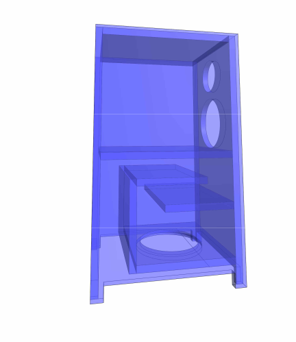
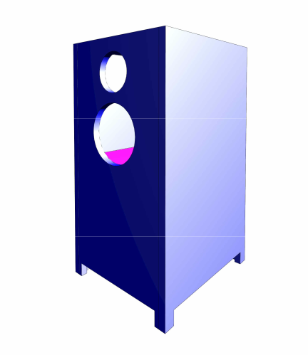
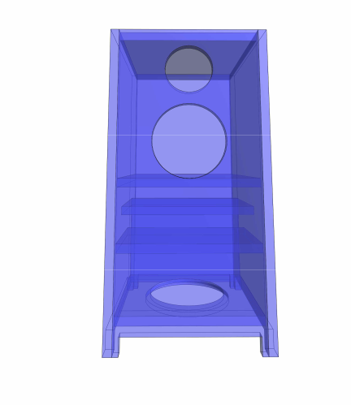

Revit Speaker Acoustic System — 3-Way Tower Subwoofer Project



Tower Speaker 3D look inside
This project demonstrates a modern engineering workflow that combines BIM modeling, drafting data extraction, and private AI automation into a single streamlined pipeline. Using an 800-watt 3-way tower speaker as a practical example, we show how traditional design tools can become an intelligent specification system — generating drawings, organizing materials, producing documentation, and assisting performance optimization. The objective isn’t simply to design a speaker. It’s to demonstrate a faster method for producing real engineered products.
- Phase 1 — Concept Design (Revit) We begin with what I call vibe drafting: designing freely without strict parameters, similar to early hand-drafting methods. After the form is established, AI evaluates and refines the parameters to improve acoustic performance. We start with a standard Revit tower speaker model from a previous project and upgrade it into a full workflow demonstration. The enclosure is modeled with separated acoustic chambers and airflow compartments.
- Project Conversion The design is then prepared as a structured project package: • Drawings exported to PDF and SVG • Data extracted into structured tables • Materials organized automatically Next, a private AI system is introduced. The AI reads the Revit and AutoCAD outputs, processes the specifications, and prepares them for web-based documentation within an HTML/CSS engineering environment. Project Conversion The design is then prepared as a structured project package: • Drawings exported to PDF and SVG • Data extracted into structured tables • Materials organized automatically Next, a private AI system is introduced. The AI reads the Revit and AutoCAD outputs, processes the specifications, and prepares them for web-based documentation within an HTML/CSS engineering environment.
- Intelligent Workflow Instead of manually managing specifications, the AI can: • organize material lists • update documentation • modify parameters • assist acoustic optimization The speaker becomes more than a physical object — it becomes a live engineering dataset. This project demonstrates how BIM, CAD, and AI can operate together as a single automated design pipeline. Stay tuned — next we’ll show how the system begins improving the acoustic tuning of the enclosure.

to be continued....
next section will be - 1. install speakers test sound - 2. creating a Web page to allow page to communicate with Ai (LLM).....